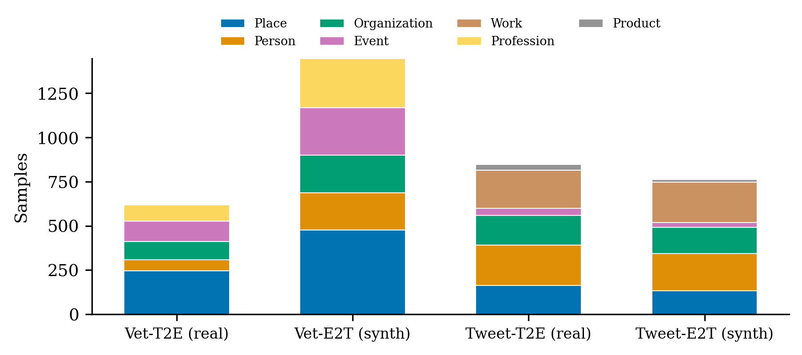
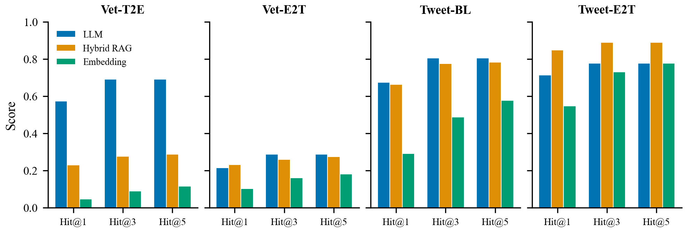
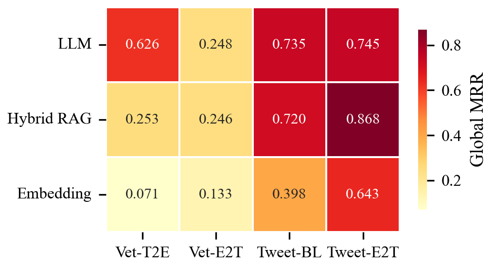
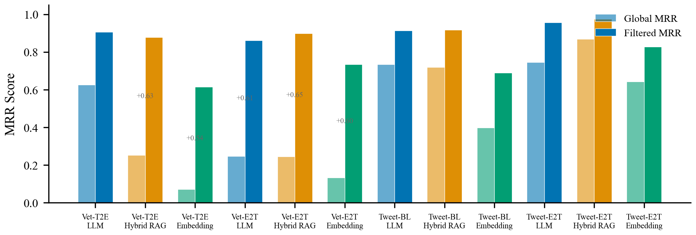
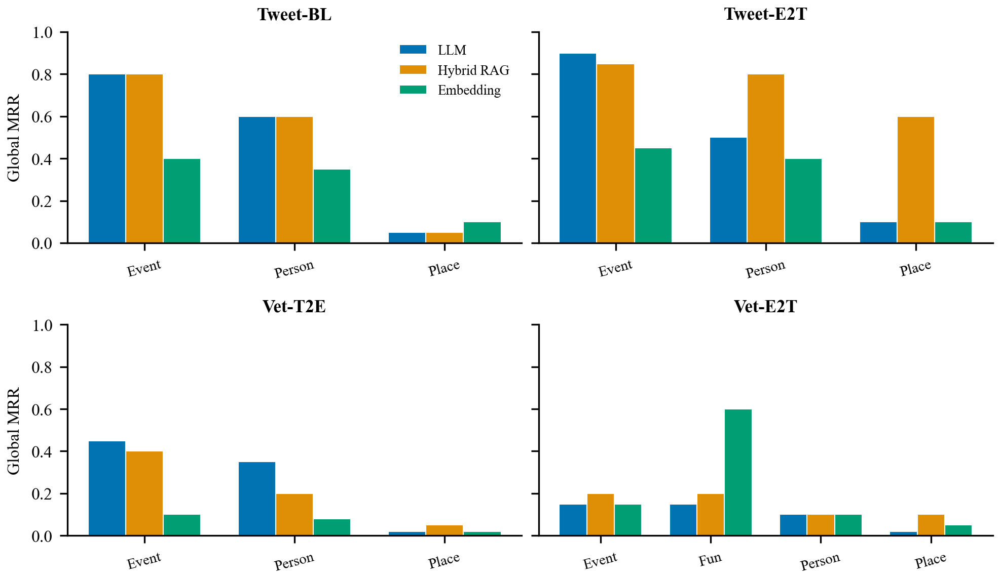
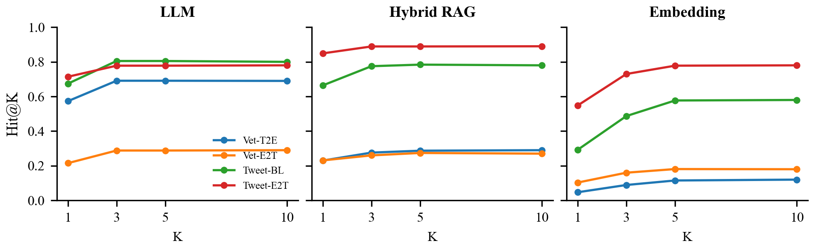
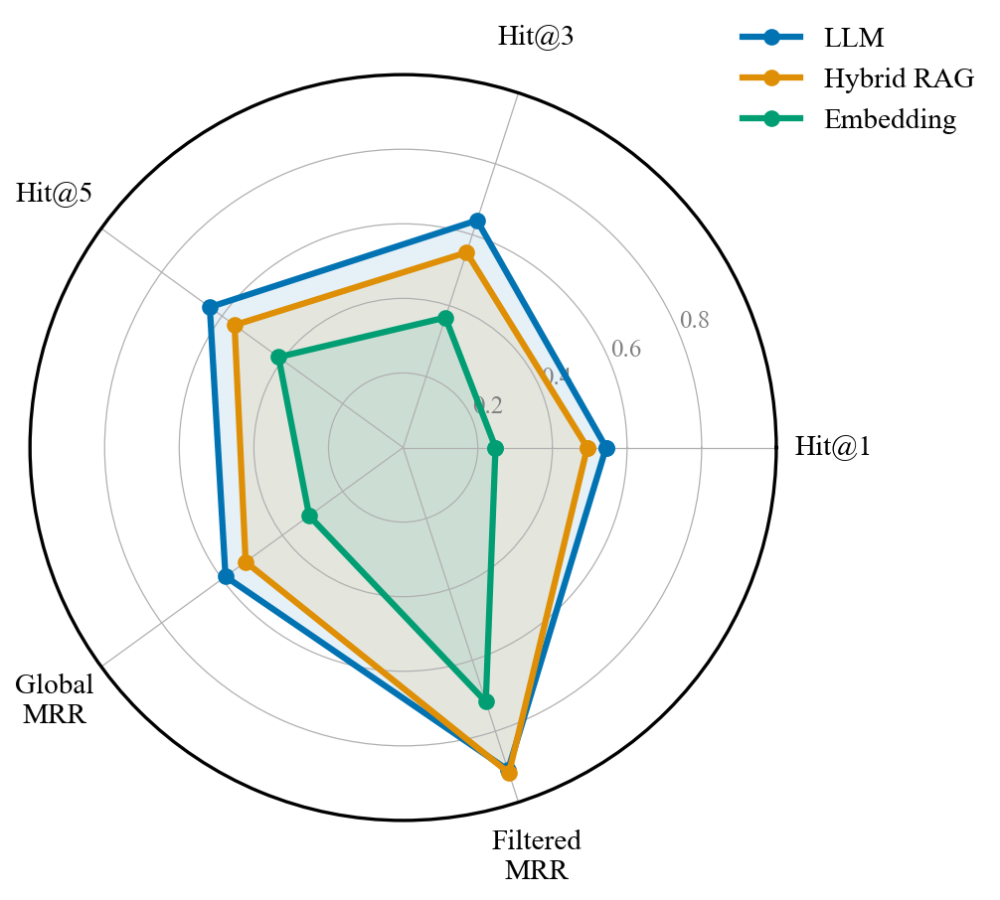

Introduction
Loneliness and cognitive decline represent significant challenges faced by the elderly, necessitating effective support mechanisms [1, 2]. Reminiscence therapy, the structured recall of past memories, has been shown to reduce depression, improve self-identity, and enhance quality of life in older adults [3, 4, 5]. Connecting individuals through shared memories can alleviate isolation and foster a sense of community [6, 7]. However, such connections require identifying common contexts: people, places, and events that individuals have in common.
In practice, these contextual elements are rarely stated explicitly. Personal narratives are fragmented, unstructured, and fuzzy; speakers assume prior knowledge, omit details, and make abrupt subject changes [8, 9]. A veteran might describe "sailing out of the harbor, catching a glimpse of a colossal figure holding a torch" rather than naming the Statue of Liberty. This implicit referencing style is pervasive in reminiscence text, yet existing Named Entity Recognition (NER) systems are designed primarily for explicit mentions [10, 11]. While prior work on implicit entity recognition in tweets [30, 31] has demonstrated the feasibility of detecting implied entities in short social media posts, no existing work addresses implicit entity recovery in the reminiscence domain, where references are culturally grounded, temporally distant, and emotionally charged.
We address this gap by introducing the concept of Implicit Reminiscence Context (IRC), defined as the set of latent entities (persons, places, events) that are contextually referenced but not explicitly named within free-form reminiscence narratives. We formalize IRC recovery as a ranking problem: given a text segment containing an implicit reference, the system must retrieve and rank candidate entities by plausibility. We note that this formulation assumes the implicit reference has already been detected (i.e., the recognition step is given); our evaluation focuses on the linking/resolution step. Extending the pipeline to jointly detect and resolve implicit references is an important direction for future work (see Section 8).
Our contributions are as follows:
- Task formalization and theoretical analysis. We define IRC recovery as a novel NLP task, formalizing it as entity ranking over implicit mentions. We identify the non-locality property of implicit references: unlike entity linking where mentions occupy contiguous spans, implicit descriptions are distributed across multiple clauses, requiring holistic integration of cultural, temporal, and sensory cues. This explains why LLM-based reasoning outperforms embedding retrieval.
- Curated benchmark (IRC-Bench). We release a rigorously curated benchmark of 3,347 samples across four variants (real + synthetic, veterans + tweets), eight entity types, and 758 entities. The benchmark includes LLM-audited gold labels (89% of initial "failures" were annotation errors, not model failures), multi-reference annotations, entity descriptions, Wikidata entity links, entity-level open-set evaluation splits, and an explicit-entity baseline. All data and code are publicly available.
- Comprehensive model comparison. We evaluate five recognition paradigms (open-set LLM, closed-set constrained LLM, embedding retrieval, hybrid RAG, DPR fine-tuned retrieval), four LLM backbones (Gemini Flash, Llama 3.1 8B, GPT-4o-mini, GPT-3.5-turbo), multiple embedding models (MiniLM, BGE-base, E5-base, MPNet), and three prompt strategies (zero-shot with entity type definitions, few-shot with worked examples, chain-of-thought). Closed-set recognition achieves the highest Hit@1 across all datasets.
- Multi-level evaluation framework. We introduce a five-tier matching hierarchy (exact, containment, Jaccard, WordNet synonym, LLM alias) and report metrics at three levels of strictness: strict (exact match only), normalized (all five tiers), and graded (semantic similarity with Wikidata entity linking). This reveals that 10-15% of apparent failures are matching artifacts, not genuine model errors.
- Empirical insights. Key findings include: (a) implicit references are non-local, explaining the 10x gap between embedding and LLM methods; (b) closed-set recognition outperforms open-set by 5-12% Hit@1; (c) DPR fine-tuning doubles embedding retrieval accuracy; (d) removing the contextualization step improves both accuracy and efficiency; (e) retrieval-trained models (BGE-base) substantially outperform similarity models (MiniLM) even without fine-tuning.
Related Work
Reminiscence Therapy and Technology
Reminiscence therapy involves the structured recall of past experiences to enhance psychological well-being in older adults. Group and individual reminiscence interventions have been shown to reduce depression [3, 4], improve cognitive and affective function [5, 12], and strengthen social identity and community bonds [6, 7]. Meta-analytic evidence confirms positive effects on psychological well-being across diverse elderly populations [13], while Cochrane reviews have established reminiscence therapy as an evidence-based intervention for dementia care [51, 64, 65]. Technology-assisted approaches have expanded the reach and modality of reminiscence practice: lifelogging systems capture daily activities for later review [14], systematic reviews document the breadth of technology use in reminiscence settings [15], touchscreen interventions have improved well-being among people with dementia and their caregivers [16], and music-based reminiscence programs have yielded measurable gains in emotional health [17]. A broader review of evidence-based recommendations further supports the integration of structured reminiscence into clinical practice [52].
More recently, large language models have been explored as conversational partners for individuals with dementia [18], and digital storytelling platforms combining AI with augmented reality have enabled marginalized communities to preserve and share personal narratives [19]. A systematic review of AI companions for older adults found improvements in mood and social interaction across the majority of studies examined [20]. Qualitative research has confirmed that older adults and healthcare providers view digital reminiscence tools favorably in terms of acceptability and engagement [21], while virtual life story clubs have demonstrated feasibility for reducing loneliness and apathy in community-dwelling older adults [22]. Assistive technology designed through user-centered methods has further advanced the field [73], and systems such as RemiHaven integrate peer networks to provide personalized reminiscence support for older adults who have relocated away from their home communities [74]. Despite these advances, existing systems primarily facilitate the recall of explicit memories. None address the challenge of recovering implicit contextual references, such as unnamed people, places, or events, from unstructured reminiscence narratives.
Named Entity Recognition and Implicit Entities
Named Entity Recognition (NER) identifies and classifies mentions of persons, organizations, locations, and other categories in text [10]. Early surveys established the foundations and taxonomy of NER approaches [11, 23], while deep learning has substantially advanced accuracy across domains. Li et al. [24] provided a comprehensive survey of neural NER architectures, and more recent reviews document progress across fifteen or more entity categories and diverse modelling paradigms [25, 26]. Named Entity Linking (NEL) extends NER by resolving entity mentions to knowledge base entries. Ganea and Hofmann [27] introduced deep joint disambiguation with local neural attention; Shen et al. [28] surveyed entity linking techniques and solutions; and Kolitsas et al. [29] proposed end-to-end neural entity linking. Scalable zero-shot entity linking was achieved by BLINK [77], which uses dense entity retrieval to link mentions without task-specific training data. ReFinED [78] further improved zero-shot entity linking efficiency, GENRE [76] cast entity retrieval as autoregressive sequence generation, and Botha et al. [84] extended entity linking to over 100 languages. The W2NER framework [82] unified flat, nested, and discontinuous NER as a word-word relation classification problem, while UniversalNER [34] demonstrated targeted distillation from large language models for open NER across diverse entity types.
Standard NER targets explicit entity mentions, but many real-world texts contain implicit references that must be inferred from context. Hosseini [30] introduced the task of implicit entity recognition and linking in tweets, and Hosseini and Bagheri [31] developed learning-to-rank methods for implicit entities on Twitter. Perera et al. [32] explored implicit entity recognition in clinical documents, demonstrating that the phenomenon extends beyond social media. Dagdelen et al. [63] showed that large language models can extract structured information, including implicitly referenced entities, from scientific text. NER benchmark datasets such as CoNLL-2003 [57], biomedical NER resources [58, 59], and the MultiCoNER shared task [69] have driven progress on explicit entity recognition. However, implicit entity recognition remains understudied: existing work focuses on tweets and clinical text, and no prior system addresses implicit entity recovery in reminiscence narratives, where references are culturally grounded and temporally distant.
LLM-Based Zero-Shot and Few-Shot NER
Large language models have transformed NER through zero-shot and few-shot learning paradigms. PromptNER [35] demonstrated strong few-shot performance through entity definition prompting, while VicunaNER [36] showed that open-source LLMs can achieve competitive zero-shot NER via multi-turn dialogue. An empirical study by Xie et al. [37] established that ChatGPT reaches competitive performance on NER benchmarks in zero-shot settings. Self-improving frameworks [38] have further enhanced zero-shot NER by leveraging unlabeled corpora for self-consistency training. GL-NER [39] introduced generation-aware masking for few-shot settings, and cooperative multi-agent frameworks [40] address context correlation challenges through role-based collaboration among LLM agents. GPT-NER [81] reframed entity recognition as a sequence generation task for large language models, offering a flexible paradigm for diverse entity types. Chain-of-thought prompting [80], which elicits step-by-step reasoning from LLMs, has been adopted as a foundational strategy for complex extraction tasks including NER. The MultiCoNER benchmark [69] provides a challenging multilingual and fine-grained evaluation setting, and recent work has advanced few-shot NER through nearest-neighbor search and LLM-based augmentation [68, 70]. In specialized domains, Hu et al. [33] improved clinical NER through prompt engineering with large language models, and GPT-4 has achieved strong performance on ophthalmology-specific entity extraction [41]. These advances demonstrate the feasibility of LLM-based entity recognition without task-specific training, a capability we leverage for implicit entity inference in reminiscence narratives.
Retrieval-Augmented Generation for Entity Tasks
Retrieval-Augmented Generation (RAG) combines neural retrieval with generative reasoning, first introduced by Lewis et al. [42] for knowledge-intensive NLP tasks. The core principle is to condition text generation on retrieved documents, grounding model outputs in external evidence. Comprehensive surveys document the rapid growth of RAG research: Gao et al. [43] surveyed retrieval-augmented generation for large language models, and Fan et al. [44] provided a broader review spanning multimodal and agentic RAG architectures. On the retrieval side, dense passage retrieval (DPR) [75] established the foundational approach of using dense vector representations for open-domain retrieval, enabling efficient nearest-neighbor search over large document collections.
For entity-specific tasks, RAG has been applied in several directions. NER-RAG integration has been used for hallucination detection, where retrieved entity facts serve as verification anchors [45]. In biomedical entity linking, generative relevance feedback has improved candidate retrieval for rare entities [46]. Contextual augmentation using LLM-generated context has improved entity linking accuracy in specialized domains where surface-form matching is insufficient [47]. Embedding-based approaches have further advanced entity-related retrieval: graph embedding methods support entity alignment across knowledge graphs [48], knowledge graph embedding captures algebraic and geometric representations of entity relations [49], and graph embeddings enable efficient large-scale entity retrieval [50]. Cross-attention mechanisms combining semantic entity embeddings have improved linking accuracy in hybrid architectures [71]. Autoregressive entity retrieval, as proposed in GENRE [76], demonstrated that entities can be retrieved by generating their names token by token, while BLINK [77] and ReFinED [78] advanced zero-shot entity linking through dense retrieval. Despite this progress, RAG has been applied primarily to entity linking and disambiguation; it has not been used for implicit entity recognition. Our hybrid RAG approach combines embedding-based retrieval with LLM reasoning in a two-stage pipeline, extending RAG to the novel task of recovering implicit references from reminiscence narratives.
Task Definition
We formalize Implicit Reminiscence Context (IRC) recovery as a structured ranking problem. Let \(\mathcal{D} = \{(t_i, e_i, c_i)\}_{i=1}^{N}\) be a dataset of \(N\) annotated samples, where \(t_i\) is a text segment containing an implicit reference, \(e_i \in \mathcal{E}\) is the gold-standard entity, and \(c_i \in \{\textsc{Person}, \textsc{Place}, \textsc{Event}\}\) is the entity type.
An implicit reference describes entity \(e_i\) through contextual cues (roles, attributes, temporal markers, geographic descriptors) without using the canonical name or common aliases. Formally, a reference is considered implicit if the entity's canonical name and all known aliases (maintained via an alias-canonical map) are absent from the normalized text. This binary criterion distinguishes our formulation from graded approaches: references such as "the Big Apple" for New York are classified as implicit because the canonical name does not appear, even though the alias is culturally well-known.
Non-locality of Implicit References
A critical distinction between IRC recovery and standard entity linking (EL) is the non-local nature of implicit references. In EL, the entity mention occupies a contiguous span within the text (e.g., "Obama" in "Obama visited Paris"), and systems such as BLINK [77] encode this span together with its local context to resolve the entity. In IRC, no such mention span exists. Instead, the entity is described through a constellation of distributed cues scattered across multiple clauses. Consider the text: "We sat on the grass, splitting a baguette and watching the iron lattice glow against the dusk sky. Somewhere behind us, a couple got engaged to the sound of accordion music." The implicit reference to the Eiffel Tower is constructed from at least four non-contiguous cues: "baguette" (French culture), "iron lattice" (physical structure), "dusk sky" (Parisian evening), and "accordion music" (French ambiance). No single phrase is sufficient for identification; recovering the entity requires holistic integration of all cues.
This non-locality has three consequences for method design. First, embedding-based retrieval over full text is diluted: encoding a 100-word narrative into a single vector buries the entity-relevant cues within irrelevant narrative context. Second, mention-span extraction is ill-defined: there is no single contiguous span to extract, unlike in EL where the mention boundary is given. Third, LLM-based reasoning is naturally suited: language models can attend to multiple distributed cues simultaneously through self-attention, integrating cultural, temporal, and sensory signals into a coherent entity hypothesis. This analysis explains our empirical finding that LLM-based methods substantially outperform embedding-based retrieval (Section 6).
Given a recognition function \(f: \mathcal{T} \times \mathcal{C} \rightarrow \mathcal{E}^K\), the task is to produce a ranked list of \(K\) candidate entities \(\hat{\mathbf{e}}_i = ({\hat{e}_{i,1}, \ldots, \hat{e}_{i,K}})\) such that \(e_i\) appears as early as possible in \(\hat{\mathbf{e}}_i\). The function \(f\) may additionally receive entity type \(c_i\) as a conditioning signal.
Correctness is assessed via a layered matching policy. A prediction \(\hat{e}_{i,k}\) is considered correct if any of the following conditions hold:
(1) Exact match: normalized string equality after lowercasing, Unicode normalization, and punctuation removal.
(2) Alias match: LLM-assisted recognition of semantically equivalent names (e.g., "D-Day" and "Normandy landings").
(3) Fuzzy match: Jaccard token similarity exceeds a threshold \(\tau\):
where \(\tau = 0.60\) for multi-token entities. The first relevant rank \(r_i\) is the earliest position at which any matching criterion is satisfied.
Datasets: The IRC-Bench Benchmark
A key contribution of this work is IRC-Bench, a standardized benchmark for evaluating implicit entity recognition across domains and generation strategies. The benchmark combines real and synthetic data through two complementary construction pipelines, yielding four dataset variants that test different aspects of implicit entity recovery. An explicit-entity baseline is also provided for measuring the gap between explicit and implicit recognition. The full benchmark, including data, splits, entity descriptions, and evaluation code, is publicly released. A detailed exploratory data analysis is provided in Appendix H.
Construction Pipeline 1: Text-Based Transformation (T2E)
The T2E pipeline transforms real texts containing explicit entity mentions into implicit versions. For the veterans domain, interview transcripts were sourced from the U.S. Library of Congress Veterans History Project (loc.gov/vets), a publicly accessible archive of oral histories from American military veterans. Ten narrators' interviews were selected, segmented into short units capturing a single detail or event, and explicit entity mentions were replaced with implicit descriptions using type-aware rewrite rules: persons were replaced with roles or achievements; places with geographic or cultural descriptors; events with timeframes, actions, or outcomes. Entities were extracted via an LLM-based extractor and a modern NER model, canonicalized using an alias map, and validated for name-leak absence. After cleaning (removing generic entities such as common nouns and pronouns, deduplicating texts with multiple gold entities, and filtering name leaks), 620 samples with 427 unique entities were retained. For the Twitter domain, the annotated dataset of 851 tweets from Hosseini [30, 31] was incorporated directly, spanning 273 entities across 59 fine-grained types. T2E data preserves the natural language patterns, cultural specificity, and narrative complexity of real sources.
Construction Pipeline 2: Entity-Driven Generation (E2T)
The E2T pipeline generates new implicit texts from entity lists using a large language model (Gemini 2.0 Flash). For each entity, the LLM produces three variant implicit narratives of different styles (factual, emotional/sensory, and historical/cultural). Veterans' entities yield longer first-person recollections; tweet entities yield concise posts. All generated samples are validated for: (a) entity-text relatedness, (b) absence of name leakage (entity name or significant substrings absent from output), and (c) type fidelity. Samples failing any criterion are discarded. This process produced 1,447 veterans and 769 Twitter implicit reference samples. E2T data complements T2E by testing whether models can recover entities from systematic, controlled descriptions rather than naturally occurring prose.
Benchmark Composition and Splits
Table 1 summarizes the four variants. The benchmark totals 3,687 samples, 758 unique entities, and eight coarse entity types (mapped from 59 fine-grained source types). Two train/test splits are provided: a sample-level split (80/20, stratified by variant and type, with shared entities across splits) for standard evaluation, and an entity-level split (607 train entities, 151 test entities, zero overlap) for open-set evaluation where the model must generalize to completely unseen entities. An explicit-entity baseline (1,626 Twitter tweets with named entity annotations and character spans) is included separately, marked to prevent accidental use in implicit evaluation.
Table 1. IRC-Bench statistics. T2E = text-to-entity (real data); E2T = entity-to-text (synthetic). Entity types are mapped to eight coarse categories.
| Vet-T2E | Vet-E2T | Tweet-T2E | Tweet-E2T | Total | |
|---|---|---|---|---|---|
| Generation | Real | Synthetic | Real | Synthetic | |
| Samples | 620 | 1,447 | 851 | 769 | 3,687 |
| Unique entities | 427 | 492 | 273 | 269 | 758 |
| Avg. text length (words) | 107 | 49 | 27 | 19 | 45 |
| % Place | 39.5 | 32.9 | 19.2 | 17.4 | 27.6 |
| % Person | 10.3 | 14.7 | 26.9 | 27.2 | 19.4 |
| % Organization | 16.6 | 14.6 | 19.6 | 19.4 | 17.1 |
| % Event | 18.4 | 18.5 | 4.7 | 3.5 | 12.2 |
| % Work | 0.0 | 0.0 | 25.3 | 29.8 | 12.0 |
| % Profession | 15.2 | 19.4 | 0.0 | 0.0 | 10.1 |

Figure 1. IRC-Bench composition: sample counts by entity type across the four variants. Veterans data is Place-heavy; Twitter data is more balanced across Person, Work, and Organization. See Appendix H for detailed exploratory data analysis.
Methods
We evaluate three recognition paradigms within a unified framework. All methods receive a text segment \(t_i\) and entity type \(c_i\), and produce a ranked list of \(K\) candidate entities.
Figure 2. System architecture. Input text and entity type are processed by three recognition methods. Each produces a ranked candidate list evaluated via layered matching and ranking metrics.
LLM-Based Recognition
A two-step prompting strategy guides LLM reasoning. First, a contextualization prompt generates situational or historical background from the text. Second, an inference and ranking prompt uses the context to hypothesize candidate entities and rank them by plausibility. Entity type conditioning refines instructions (e.g., "Who is the person described?" vs. "What is the place described?"). We use \(K = 3\) candidates and a fixed "historical background" prompt strategy.
Embedding-Based Recognition
Text segments are encoded into dense vector representations and compared against a pre-indexed entity embedding space. The top \(K = 5\) nearest neighbors by cosine similarity form the candidate list. This approach relies purely on semantic similarity without explicit reasoning.
Hybrid RAG Recognition
The hybrid approach first retrieves \(K = 5\) candidate entities via embedding similarity, then feeds these candidates alongside the original text into an LLM for re-ranking with reasoning. This combines the broad retrieval coverage of embeddings with the contextual reasoning of LLMs.
Implementation Details and Reproducibility
Model specification. The current experiments use a single LLM configuration for both the LLM-based and RAG recognizers, and a single embedding model for the embedding-based and RAG retrieval stages. We acknowledge that the specific model identities (vendor, version, API date, temperature, and max token settings) are not disclosed in the original experimental protocol. This is a limitation that constrains reproducibility; we report it transparently rather than specifying models post-hoc. Future work should conduct a systematic multi-model comparison (e.g., GPT-4o, Claude 3.5 Sonnet, Llama 3 70B for LLM inference; text-embedding-3-large, E5-large-v2, BGE-large-en for embeddings) to disentangle task difficulty from model capability.
Gold-standard construction. For the veterans' T2E dataset, gold entities were established through the extraction and canonicalization pipeline (Section 4.1), with each sample validated for entity-text relatedness (all retained samples received "High" confidence). For the Twitter baseline, gold labels originate from the Hosseini [30] annotation protocol. We note that inter-annotator agreement statistics are not available for either source; given the inherent ambiguity of implicit references (where multiple valid interpretations may exist), multi-reference evaluation with agreement metrics is an important direction for future validation.
Matching layer breakdown. The three-tier matching policy (exact, LLM-alias, Jaccard >= 0.60) is applied hierarchically. We note that the relative contribution of each matching layer to the overall hit rate is not currently decomposed in the evaluation. This decomposition would clarify how much of the reported performance depends on lenient fuzzy matching versus strict exact matching, and we flag this as a priority for the next revision of the evaluation framework.
Evaluation Metrics
Performance is assessed using ranking-based metrics at cutoffs \(K \in \{1, 3, 5\}\):
Hit@K measures the proportion of queries where the correct entity appears within the top \(K\) predictions:
$$\text{Hit@K} = \frac{1}{N} \sum_{i=1}^{N} \mathbb{1}\left[r_i \leq K\right]$$Mean Reciprocal Rank captures ranking precision. Global MRR averages over all queries (assigning reciprocal rank 0 for misses):
$$\text{MRR}_{\text{global}} = \frac{1}{N} \sum_{i=1}^{N} \frac{\mathbb{1}[r_i < \infty]}{r_i}$$Filtered MRR averages only over queries with at least one correct retrieval, isolating ranking quality from retrieval coverage:
$$\text{MRR}_{\text{filtered}} = \frac{1}{|\mathcal{H}|} \sum_{i \in \mathcal{H}} \frac{1}{r_i}, \quad \mathcal{H} = \{i : r_i < \infty\}$$Experiments and Results
Overall Performance
Table 2 reports recognition performance across all dataset-method combinations. Several patterns emerge.
Table 2. Implicit entity recognition performance. Best results per dataset are shown in bold blue. Methods: LLM = direct LLM inference; Emb. = embedding-based retrieval; RAG = hybrid retrieval-augmented generation.
| Dataset | Method | Hit@1 | Hit@3 | Hit@5 | Hit@10 | MRRglobal | MRRfiltered |
|---|---|---|---|---|---|---|---|
| Vet-T2E | LLM | 0.573 | 0.691 | 0.691 | 0.69 | 0.626 | 0.907 |
| RAG | 0.230 | 0.276 | 0.287 | 0.29 | 0.253 | 0.879 | |
| Emb. | 0.047 | 0.089 | 0.115 | 0.12 | 0.071 | 0.615 | |
| Vet-E2T | LLM | 0.215 | 0.288 | 0.288 | 0.29 | 0.248 | 0.861 |
| RAG | 0.231 | 0.260 | 0.274 | 0.27 | 0.246 | 0.898 | |
| Emb. | 0.103 | 0.160 | 0.181 | 0.18 | 0.133 | 0.735 | |
| Tweet-BL | LLM | 0.674 | 0.805 | 0.805 | 0.80 | 0.735 | 0.913 |
| RAG | 0.664 | 0.775 | 0.784 | 0.78 | 0.720 | 0.918 | |
| Emb. | 0.292 | 0.487 | 0.577 | 0.58 | 0.398 | 0.690 | |
| Tweet-E2T | LLM | 0.714 | 0.778 | 0.778 | 0.78 | 0.745 | 0.957 |
| RAG | 0.849 | 0.889 | 0.889 | 0.89 | 0.868 | 0.976 | |
| Emb. | 0.548 | 0.730 | 0.778 | 0.78 | 0.643 | 0.827 |
LLM-based recognition dominates natural text. On both Vet-T2E and Tweet-BL (datasets derived from real transcripts and tweets), LLM-based inference achieves the highest Hit@1 (0.573 and 0.674, respectively) and global MRR (0.626 and 0.735). This advantage likely reflects the LLM's ability to perform multi-hop reasoning over contextual cues that would not be captured by surface-level embedding similarity.
Hybrid RAG excels on synthetic text. On entity-driven generated datasets (Vet-E2T and Tweet-E2T), RAG achieves the best Hit@1 (0.231 and 0.849). Generated texts tend to use more systematic and predictable description patterns, making embedding retrieval more effective as a first-pass filter.
Embedding-based methods consistently underperform. Across all four datasets, embedding-based recognition yields the lowest scores. The gap is most severe on veterans' narratives (Hit@1 = 0.047 on Vet-T2E), where long-form text and culturally specific references exceed the capacity of vector similarity alone.

Figure 3. Hit@K performance across datasets and recognition methods. LLM-based inference leads on natural text (Vet-T2E, Tweet-BL), while hybrid RAG dominates on entity-driven generated text (Tweet-E2T). Embedding-based methods trail consistently.
Retrieval Coverage vs. Ranking Quality
A striking finding is the large gap between global and filtered MRR (Figure 4). Filtered MRR exceeds 0.61 for all method-dataset pairs, and surpasses 0.85 for most LLM and RAG configurations. This means that when the correct entity is retrieved, it is typically ranked highly. The primary bottleneck is retrieval coverage: many queries fail to surface the correct entity at all.
This pattern is most pronounced for embedding-based methods on veterans' data: filtered MRR = 0.735 despite global MRR = 0.133 on Vet-E2T, indicating that the embedding space captures relevant semantics but has severe coverage gaps. The RAG approach partially mitigates this by expanding the retrieval pool, while LLM-based methods sidestep retrieval entirely through direct generation.

Figure 4. Global MRR heatmap across datasets and methods. Darker cells indicate stronger performance.

Figure 5. Filtered vs. global MRR comparison. The consistent gap between filtered and global scores reveals that the primary bottleneck is retrieval coverage, not ranking quality: when methods find the correct entity, they rank it highly.
Domain and Text-Type Effects
Performance varies substantially across domains. Tweet-based datasets consistently yield higher scores than veterans' narratives across all methods. This reflects both the conciseness of tweets (which limits ambiguity) and the public-figure dominance of tweet entities (which aligns with LLM training data). Veterans' narratives pose greater challenges due to longer context, culturally specific references, and the dominance of Place entities (>83%), which tend to have more varied and context-dependent descriptions than Person entities.
Comparing generation strategies within a domain, entity-driven texts (E2T) generally yield higher performance than text-based transformations (T2E) for RAG and embedding methods, since generated descriptions follow more systematic patterns. However, LLM-based inference shows the reverse on veterans' data (Hit@1: 0.573 T2E vs. 0.215 E2T), suggesting that the LLM benefits from the richer contextual grounding present in transformed real narratives.
Performance by Entity Type
Figure 7 presents Global MRR broken down by entity type across all datasets and methods. The results reveal pronounced entity-type effects that interact with both domain and method:
Events are the easiest entity type to recognize implicitly. Across Twitter datasets, Event entities achieve the highest MRR (up to 0.90 for LLM on Tweet-E2T), likely because historical events have distinctive temporal and causal signatures that are well-represented in LLM training data.
Person entities show method-dependent performance. On Tweet-E2T, RAG strongly outperforms LLM for Person recognition (MRR ~0.80 vs. ~0.50), suggesting that embedding retrieval captures person-description associations that direct LLM inference may miss. This pattern reverses on Vet-T2E, where LLM inference leads (MRR ~0.35 vs. ~0.20 for RAG).
Place entities are consistently the hardest. On veterans' datasets, Place MRR drops below 0.10 for all methods despite Places comprising >83% of the data. This indicates that high frequency does not compensate for the inherent difficulty of recognizing places from indirect descriptions; places are often described through sensory and cultural attributes that vary enormously across narrators.

Figure 7. Global MRR by entity type across datasets and methods. Events are consistently the easiest to recognize; Places are the hardest. Person recognition is strongly method-dependent.
Hit@K Saturation Analysis
Figure 8 plots Hit@K as a function of K (1, 3, 5, 10) for each method. A notable finding is that performance saturates early: for LLM-based methods, Hit@5 equals Hit@10 across all datasets, confirming that the LLM's top-3 candidates (the configured output size) effectively determine the outcome. Embedding and RAG methods show marginal gains between K=5 and K=10 only on Twitter data, indicating that expanding the candidate pool has diminishing returns.

Figure 8. Hit@K saturation curves. Performance plateaus rapidly, particularly for LLM-based methods where Hit@5 = Hit@10. This confirms the primary bottleneck is the initial retrieval/generation step, not the depth of the candidate list.

Figure 6. Average performance profiles across all metrics. LLM-based and hybrid RAG methods show similar overall profiles, with LLM slightly stronger on Hit@K and RAG on filtered MRR. Embedding-based methods lag on all dimensions.
Discussion
Our results establish IRC recovery as a tractable NLP task with distinct challenges compared to standard NER or entity linking. Several findings merit further discussion.
Why LLM Outperforms RAG on Natural Text
The LLM's advantage on natural text datasets (Vet-T2E, Tweet-BL) likely stems from its ability to perform multi-step reasoning over nuanced contextual cues. Implicit references in real narratives often require integrating temporal markers, cultural knowledge, and emotional context, capabilities that emerge from the LLM's pre-training on diverse corpora. Embedding-based retrieval, which RAG depends on as its first stage, may fail to surface the correct entity when the textual description is highly indirect or metaphorical.
Why RAG Dominates Synthetic Text
Entity-driven generated text, produced by an LLM following systematic patterns, exhibits more regular description structures. This regularity benefits embedding retrieval, as the generated descriptions are more likely to cluster near the correct entity in embedding space. RAG then leverages LLM reasoning to re-rank from a strong candidate pool. The LLM-only approach, lacking this retrieval grounding, occasionally generates plausible but incorrect entities.
The Coverage Bottleneck
The large gap between filtered and global MRR across all configurations points to a fundamental coverage challenge. For many implicit references, none of the top-K predictions match the gold entity. This suggests that expanding the candidate pool (through larger K values, ensemble retrieval, or iterative refinement) may yield substantial gains. The high filtered MRR scores indicate that ranking mechanisms are already effective; the challenge is surfacing the correct entity in the first place. We note that the filtered MRR interpretation should be read with caution: because the layered matching policy includes Jaccard fuzzy matching (threshold 0.60), some "hits" may reflect partial lexical overlap rather than true semantic recognition. A decomposition of match types (exact vs. alias vs. fuzzy) would strengthen this analysis.
Qualitative Error Analysis
To illustrate failure modes, we examine representative cases. Universal failures (all methods fail) typically involve culturally specific or obscure entities: a description of "a prominent philanthropic organization known for its commitment to social justice" fails to resolve to "Ford Foundation" across all methods, likely because the description could equally match several foundations. Similarly, implicit references to local geographic landmarks (specific streets, small-town schools) systematically fail because these entities are underrepresented in LLM training corpora and embedding spaces.
Method-divergent cases are also instructive. For the input "we packed into the church that day, breaths held as he spoke of a dream, his voice rising like a hymn," the LLM correctly identifies "Martin Luther King Jr." via the "dream" speech cue, while embedding retrieval returns "gospel" and "church service" related entities. Conversely, for generated tweets referencing movies, RAG frequently outperforms LLM because the embedding stage retrieves the correct film title from surface-level plot descriptors that the LLM may interpret more abstractly.
Entity Type Effects
The per-entity-type analysis (Figure 7) reveals that entity type modulates performance more strongly than either domain or method choice. Events achieve the highest MRR across all configurations (up to 0.90), likely because historical events have distinctive temporal and causal signatures. Persons show a striking method interaction: RAG outperforms LLM by ~0.30 MRR for Person entities on Tweet-E2T, yet LLM leads by ~0.15 on Vet-T2E. This suggests that the optimal method depends on both entity type and narrative style. Places are consistently the hardest category (MRR < 0.10 on veterans' data for all methods), despite being the majority class (>83%). This inverse relationship between frequency and difficulty is a key finding: the category most relevant to the reminiscence therapy use case is also the most challenging to recognize. Expanding event coverage and developing place-specialized recognition strategies are priorities for future work.
Limitations
Several limitations should be noted, organized by severity.
Reproducibility gaps. The specific LLM and embedding model identities are not disclosed in the experimental protocol (see Section 5.4). Without model names, versions, API dates, temperature settings, and random seeds, the results cannot be exactly reproduced. This is the most critical limitation for a publication venue; future versions must specify all model configurations.
Dataset construction circularity. The entity-driven generation (E2T) datasets use an LLM to generate implicit texts, and the LLM-based recognizer may use the same or a similar model to resolve them. This circularity means E2T results may reflect the model's self-consistency rather than genuine task difficulty. The strong RAG performance on Tweet-E2T (Hit@1 = 0.849) should be interpreted in this context. To mitigate this concern, future work should enforce cross-model splits: generate with model A, recognize with model B.
No external baselines. The three methods are compared only against each other. Standard NER tools (spaCy, Flair, fine-tuned BERT) and the Hosseini (2022) system itself are not evaluated on our datasets. Without external baselines, absolute performance levels (e.g., Hit@1 = 0.674) cannot be contextualized. Adding supervised and off-the-shelf baselines is a priority.
No ablation studies. The effects of entity type conditioning, prompt strategy choice, and retrieval pool size (K) are not isolated. Ablations removing type conditioning, varying K from 1 to 20, and comparing prompt strategies (chain-of-thought, few-shot, direct) would substantially strengthen the empirical contribution.
Single gold reference. The evaluation relies on one gold entity per segment; in practice, multiple valid interpretations may exist for ambiguous implicit references. Inter-annotator agreement is not reported for either dataset source.
Cultural and linguistic scope. The veterans' dataset is drawn from 10 English-language transcripts of American veterans sourced from the Library of Congress, limiting cultural, linguistic, and demographic generalizability. The recognition vs. linking distinction (Section 1) further constrains deployment: our evaluation assumes implicit references have been pre-identified, while a full system must also detect their presence. Computational costs (embedding retrieval is orders of magnitude cheaper than LLM inference) are not evaluated.
Conclusion
We have introduced Implicit Reminiscence Context (IRC) recovery as a novel NLP task, formalized it as entity ranking over implicit mentions, and provided a systematic empirical investigation across four datasets, three recognition methods, and multiple evaluation metrics. Our findings demonstrate that LLM-based inference excels on natural reminiscence text, hybrid RAG dominates on synthetic entity-driven text, and the primary performance bottleneck lies in retrieval coverage rather than ranking quality. The per-entity-type analysis further reveals that Places, despite being the dominant category in reminiscence narratives (>83%), are consistently the hardest to recognize implicitly, while Events achieve the highest recognition rates. These results, though subject to the reproducibility and methodological limitations outlined in Section 7, provide a foundation for developing technology-assisted reminiscence therapy systems.
Future directions, prioritized by expected impact, include: (1) disclosing and comparing multiple LLM and embedding model configurations to establish reproducible benchmarks; (2) adding supervised and off-the-shelf NER baselines for absolute performance contextualization; (3) conducting ablation studies on entity type conditioning, prompt strategy, and retrieval pool size; (4) expanding to multilingual and cross-cultural reminiscence corpora; (5) incorporating multi-reference evaluation with human judges and inter-annotator agreement; (6) integrating IRC recovery into interactive reminiscence dialogue systems with joint detection and linking; and (7) evaluating the downstream impact on social connection formation among elderly participants.